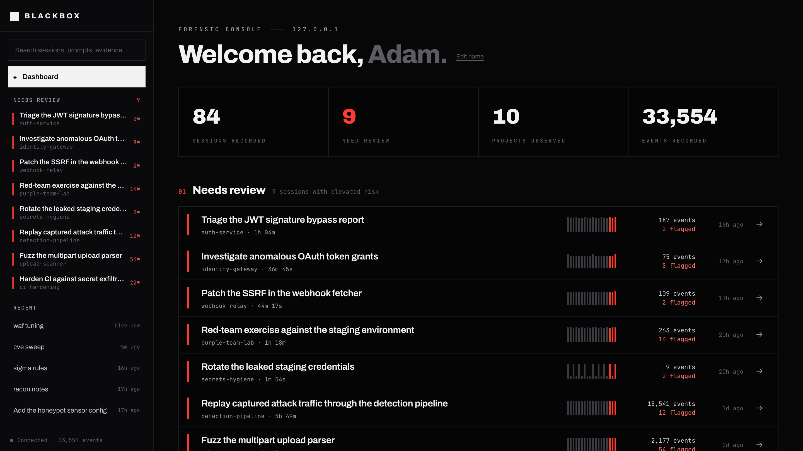

Lifecycle, prompts, tool intent, results, failures, and exposed metadata.
Local-first forensic recorder
Know what your agent actually did.
Blackbox records hook-visible activity from Claude Code, Gemini CLI, and Codex CLI, preserves a redacted evidence chain, and turns risky sessions into a review workflow your team can verify.
01 / Start recording
One command. Clear choices.
The installer persists the CLI, checks recorder health, configures the agent adapters you select, and opens Health & privacy so you can confirm exactly where evidence lives.
Requires Node.js 22, 24, or 26 · fresh setup needs an approved Git receipt remote or explicit --local-only-anchor · managed autostart on macOS
Codex CLI users review and trust the installed Blackbox definitions once through /hooks; changed hook definitions are skipped by Codex until trusted again.
The public command works after this build is published under the npm beta tag. Until then, install the checkout from source →
$ npx --yes blackbox-recorder@beta install
✓ recorder ready on 127.0.0.1:7842
✓ agent hooks configured
# then verify the full local pipeline
$ blackbox doctorEvidence, not another transcript.
Blackbox normalizes all three adapters into one event schema. Interpretation stays separate from immutable evidence, so rules can improve without rewriting history.
Secrets are redacted before persistence; outputs are hashed by default.
Deterministic findings, Git reconciliation, reviewer decisions, and signed aggregates.
02 / Outcome-aware findings
Separate intent from result.
A dangerous command matters even when it fails. Blackbox keeps severity and outcome distinct, then explains whether an action was attempted, succeeded, failed, or left unresolved by the available hook events.
“Succeeded” means the recorded tool reported success. It is not packet-level proof that data reached a destination.
01
Attempted
Intent observed; no terminal result.
02
Succeeded
Tool reported a successful result.
03
Failed
Tool reported failure; risk remains visible.
04
Unknown
The available evidence cannot decide.
Review inbox
2 unresolved
Sensitive read → external send
unreviewed
Authentication guard weakened
expected
Dangerous shell command
unreviewed
03 / Pre-merge review
Turn findings into decisions.
The Review Inbox collects unresolved findings across sessions. Reviewers can acknowledge, mark expected work, or record a false positive without mutating the evidence that produced the finding.
Project baselines add an “expected” label. They never hide a finding or remove it from signed review counts.
04 / Portable trust
Sign the result, not the raw evidence.
Create an Ed25519-signed session attestation with the chain range, current verdict, finding outcomes, review totals, coverage, recorder identity, and optional revision metadata.
In GitHub Actions, Blackbox can write aggregate-only named outputs and a job summary, then fail the job at your chosen unresolved severity threshold.
Existing artifacts require a pinned identity via --trusted-key or --check. Actions output also requires an exact full signed commit match via --expected-commit. Read the attestation guide →
Attestations exclude prompts, commands, paths, source code, tool output, host names, and reviewer notes.
format
blackbox-session-attestation / v1
evidence
seq 184–241 · 58 events · hash 7b5a…f029
assessment
high · score 82 · ruleset r4
review
1 unresolved high · 2 acknowledged
signature
verified under pinned key
05 / Investigation console
Start with the sessions that need you.
Open the local UI for session summaries, activity, evidence, deterministic graphs, Review Inbox, recorder health, and direct privacy settings.

06 / Honest boundaries
A recorder, not an enforcement layer.
Blackbox is useful because its claims stay narrow. It explains evidence exposed by configured sources; it does not claim visibility the host never provided.
- 01Blackbox does not block commands, sandbox agents, restore files, or replace endpoint security.
- 02Outbound targets come from hook-visible inputs. They are not kernel-level network telemetry or delivery confirmation.
- 03Raw evidence stays local by default. Explicit reports and OTLP exports can move data; GitHub Actions writes aggregate metadata retained with the run; enabled anchors send signed chain-head receipt metadata only.
- 04A process that controls the database, signing key, watermark, hooks, and every external receipt can defeat local custody.
- 05Capture depends on adapter coverage. Health checks, transcript coverage, and Git reconciliation surface gaps rather than guessing them away.
Public beta · MIT licensed
Read the docs on GitHub